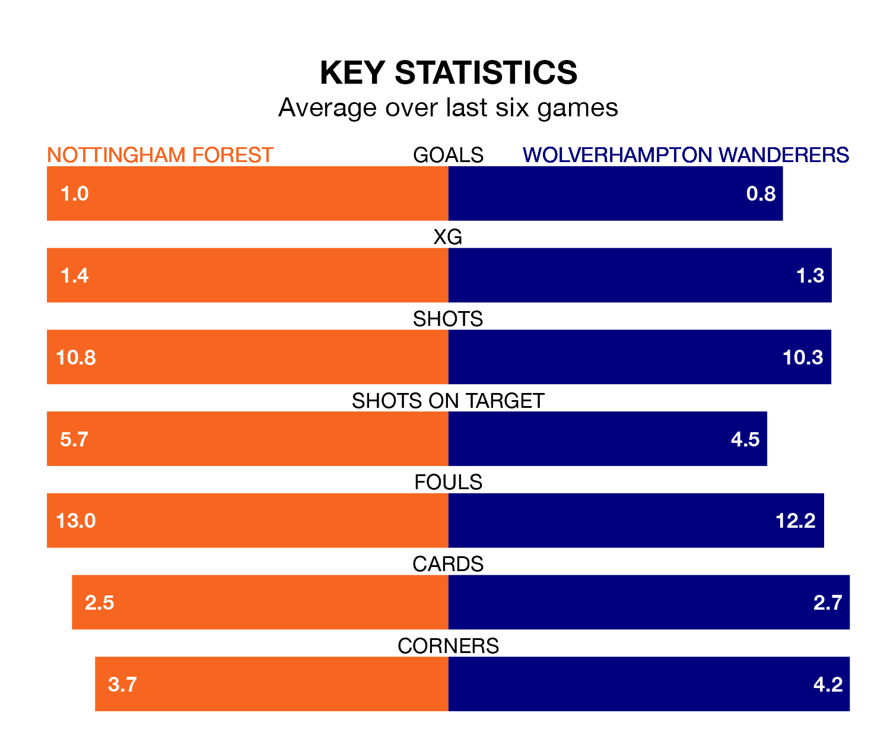

Wolverhampton Wanderers travel to Nottingham Forest on Saturday in the Premier League.
The visitors come into the game on the back of a defeat in their last match, having lost to West Ham United 2-1 at home, with a goal from Pablo Sarabia.
The Tricky Trees also lost their last match, 3-1 against Tottenham Hotspur, with their goal scored by Chris Wood.
In the last 10 years, Forest and Wolves have played each other on 13 occasions. Forest won two of them, Wolves six, and they drew five times.
On average, the Tricky Trees scored 0.9 goals and Wolves 1.3 in those matches.
Their last meeting was on December 9, when they played out a 1-1 draw.
Forest are 17th in the table after 32 games, of which they have won seven and drawn eight, earning 29 points.
Wolves are six places ahead of the Tricky Trees in 11th, with 12 wins and six draws putting them on 42 points.
The hosts are in disappointing form in the Premier League, with one win and two draws from their last six games.
With two wins and a draw over that period, the away team's form is slightly better – they have taken seven points from 18, compared to Forest's five.
With 40 goals in 32 games so far this season, Forest are scoring at below the league average rate with 1.2 goals per game. And they are conceding more than average, letting in 56 goals at a rate of 1.8 per game.
Wolves are also below average scorers, with 1.4 goals per game, compared to a league average of 1.6. They have conceded 1.6 goals per game.
Wolves's Pedro Neto is among the league's most creative players, racking up nine assists in 19 appearances so far this season, and holding fourth spot in the Premier League's assist charts.
For the Tricky Trees, Anthony Elanga has set up the most goals, having laid on eight assists in 31 games.
Updated: 11:20 (UTC), 09/04/24